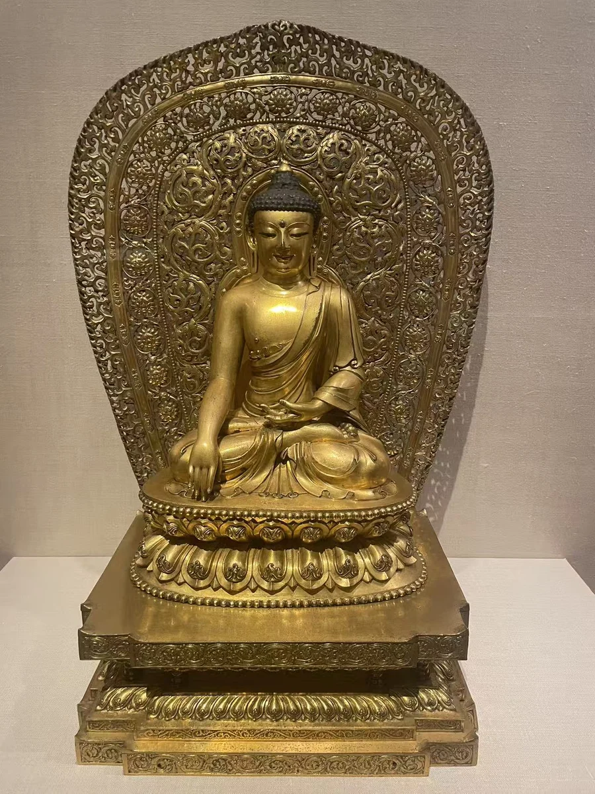
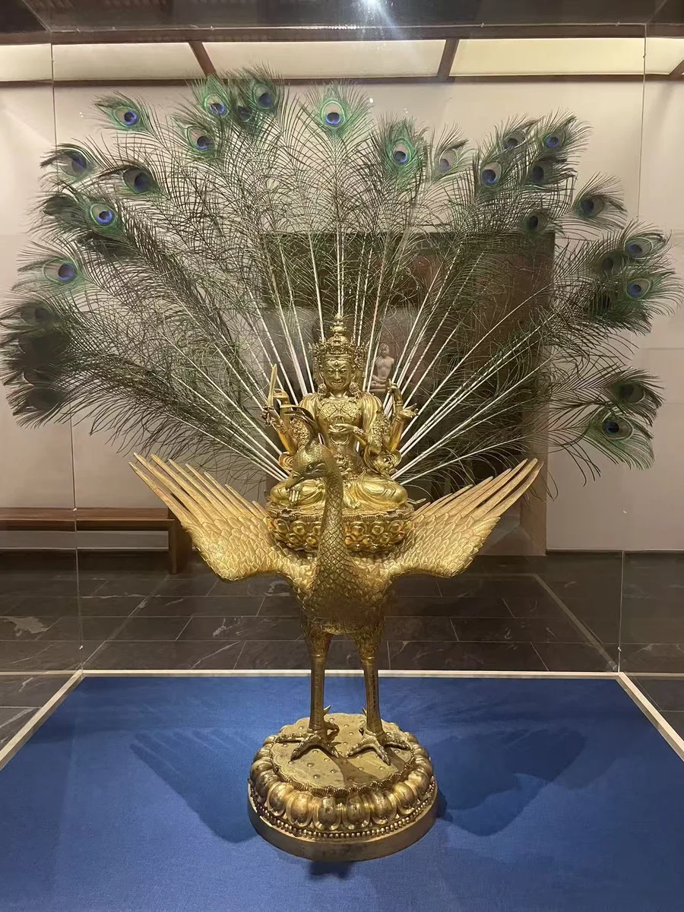
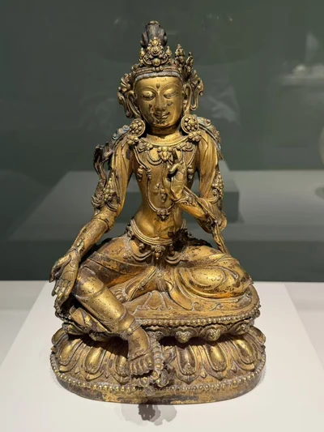
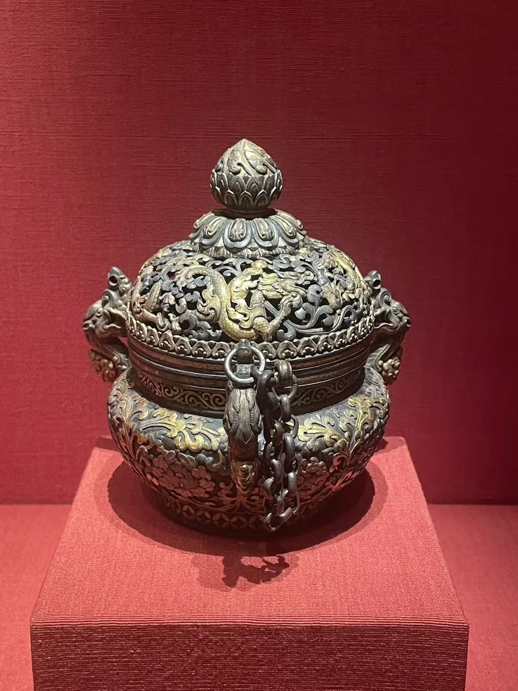

博物馆札记 / 中国佛教艺术 ／ 喜马拉雅艺术 COURT / OFFERING / MAKING
金色之下，不同的供养 永乐（1403—1424）与宣德（1426—1435）两朝的佛教艺术，与宫廷礼拜、赞助和对外赠献相连。藏地上师与明廷的往来，也让不同地区的图像和制作传统在宫廷相遇。莲座上小小的“年施”款，往往比醒目的金色更能说明一件像与这种供养关系的联系。 [1] [2] [3]
但共同的宫廷背景，并没有把形象变成一种样式。释迦牟尼以手印重述成道，观音以舒缓的身姿回应礼敬，孔雀明王把复杂的图像组合在一起，大成就者则用强烈动作进入宗教叙事。再与旃檀瑞像传统的立佛和仪式器物并看，供养既包括面对尊像，也包括香、仪轨与反复的使用。 [4] [5] [3] [6]
回到寺院与供养网络的历史 →
宣德赐款观音 · 1426—1435年｜西雅图亚洲艺术博物馆／SAM · 59.59 · Merton摄 01 / CLOSE LOOKING
观音：款字藏在衣摆下面 右足轻轻垂下，落在一朵小莲花上。冠饰和珠链很醒目，足边那一行低低的款字却要靠近才能看见。
一足垂下，一足盘起；右手沿膝侧向下，左手停在胸前，身体的舒展由这些不同高度的肢体组成。 圆形耳饰、胸前珠链与腰间饰带一层层相接；两肩披帛的卷边，带着另一种较宽的起伏。 莲瓣上方还有一圈窄窄的平面。赐款位于衣缘与珠粒边带之间，近照把它从装饰中显现出来。 记住这行不显眼的“年施”：它把观音与宫廷赠献连接起来。
一尊供养的形象 观音是与慈悲、救护相连的菩萨。这里没有用对称的僵直姿势强调距离，而是让躯干微微放松，手、膝与垂足形成缓慢的转折。这种观看上的亲近感，与胸前密集珠链、花冠和莲座的郑重装饰同时存在。
从“年施”看赠献 西雅图馆方把足边款识解释为明宣德时期的赐予，并将这件像放在向来访西藏宗教贵宾赠献的背景中。款识让供养者的政治身份进入像座；至于这件观音具体交给了谁、曾供奉在哪座寺院，公开记录没有说明。 [2]
馆录记失蜡铸造、鎏金及红蓝颜料。照片中金色与深色磨耗交错，身体的大面较平缓，珠链与衣边则让光线碎成小段。它的工艺不只在于饰物多，更在于这些不同表面的分寸。 [2]
已知收藏记录 现属西雅图艺术博物馆的Eugene Fuller Memorial Collection，馆藏号59.59。现行公开馆录未提供此前完整流转经过，早年的受赠对象与递藏仍留有空白。 [2]
莲座上的宣德赐款 · 现场近照；款意据馆方解释，字面有磨耗 · Merton摄 作品资料与现场记录 原题名 Bodhisattva Avalokiteshvara 年代 1426—1435年 材质 鎏金铜合金，红、蓝颜料 尺寸 25.4 × 16.51 × 15.24厘米 收藏机构 西雅图亚洲艺术博物馆／SAM 馆藏号 59.59 实际观看 西雅图亚洲艺术博物馆／SAM 制作地域 中国；宫廷制作背景 [2] 馆方现行记录断为15世纪；两张现场展签写宣德1425—1435年。本站采用宣德年号的1426—1435年，保留展签起年差异。
完整作品记录 → · 地区与观看地图 →
研究与资料注 纪年与数量的范围 两张现场展签写宣德1425—1435年；官网年代栏为15世纪。此处按宣德年号采用1426—1435年，展签起年另存于作品资料。馆方提到的“三件宣德款”出自一次西藏寺院收藏调查，不是全球存世数量；该页未列调查名称与年份。 [2]

永乐款释迦牟尼坐像 · 明永乐时期，1403—1424年｜大英博物馆 · 1908,0420.4 · Merton摄 02 / CLOSE LOOKING
释迦牟尼：一组金色的制作层次 佛身、莲座、方台与背光，在展柜里组成一个完整轮廓。技术研究却让这份完整显出层次：它们未必在同一时代相遇。
右手越过膝头触地，左手掌心朝上。袈裟露出右肩，斜向衣边从胸前落入膝上的褶皱。 先看贴着佛身的两层莲瓣和珠边，再看下面边缘平直、逐层退进的方台；两种底座的接界就在这里。 背光从卷草、莲花环带推向外圈火焰；镂空让展墙透出，中央平缓的胸腹因此更显安定。 工艺研究提示：佛身与莲座、方台与背光，可能属于不同的制作时期。
手指触地的时刻 触地印联系释迦牟尼成道时请大地作证的叙事。左手留在身前，右手向下，动作很小，却为端坐的身体提供了明确的礼敬对象。大都会借展记录确认其释迦牟尼身份、永乐款及大英博物馆的收藏归属；这张照片拍于纽约的借展现场。 [4]
佛身与莲座，方台与背光 Wang与Priewe在2013年发表的技术研究发现，佛身与双层莲座以失蜡法一次铸成，材质为黄铜；下面的方形台座和背光，则用铜板拼装、刻饰。三部分都检出了汞鎏金的证据，但这层相近的金色，并不意味着它们制作于同一时刻。 [1]
研究将合金、铸造方式与形式比较放在一起，认为佛身及一体莲座符合永乐年代，而方台、背光更可能在18世纪增配。今天的观看因此有两条线：一条看释迦与莲座如何成为整体，另一条看后来扩展的底座与光背怎样改变它在空间中的分量。 [1]
款识与入藏 论文将莲座上的款识释为“大明永樂年施”。款在一体莲座上，并非最下方方台；原片可见其位置，但不足以逐字核读。大英博物馆1908年入藏这件作品，之前的原寺院与流转路线，目前未找到可靠记录。 [1]
作品资料与现场记录 原题名 Seated Buddha 年代 明永乐时期，1403—1424年 材质 鎏金铜合金；佛身及莲座为黄铜铸造，方台与背光另用铜板制作 尺寸 佛身连一体铸造莲座高37厘米（不含方台与背光） 收藏机构 大英博物馆 馆藏号 1908,0420.4 实际观看 纽约大都会艺术博物馆 制作地域 中国；宫廷制作背景 [4] [1] 纽约大都会借展所见。2013年技术研究支持佛身及一体莲座为永乐制作，方台和背光更可能为18世纪增配。
完整作品记录 → · 地区与观看地图 →
研究与资料注 技术判断与尺寸口径 论文第61—68页讨论射线影像、成分分析和样式。佛身黄铜约含12.7%的锌；方台与背光的低铁含量，以及与乾隆时期图像的装饰比较，共同支持较晚增配的解释。作者也承认类似构式更早已见，故这里保留“更可能”，不把材料检测写成绝对年代测定。 [1]
37厘米为论文所记佛身及莲座高度，不含方台和背光。大都会网页另列37 × 42.9 × 28厘米，未明确各数的测量范围；这里不以它推出组合通高。本页所据为大都会借展记录与上述技术论文。 [4] [1]

宣德款孔雀明王 · 明宣德时期，1426—1435年｜柏林民族学博物馆 · I D 31831 · Merton摄 03 / CLOSE LOOKING
孔雀明王：一副向外展开的形体 孔雀的双翼向两旁张开，真实尾羽在后方展开更大的轮廓。三面六臂的主尊反而集中在中央，近看才能辨出层层相叠的脸与手。
正面头与侧面的轮廓围绕冠饰展开，六臂伸向不同方向；正面视角并不把每一张脸都完全打开。 孔雀的喙偏向一侧，颈部是细密鳞羽，两翼则是一层层长羽；金属鸟身把上方尊像与底下莲座连接起来。 尾羽、金属双翼与小小的主尊有不同尺度。完整组合照保留了这种关系，细看持物时也不要忘记它的坐骑。 三面六臂的主尊与孔雀坐骑，是这件图像组合的核心。
护佑如何成为可见形象 孔雀明王与护咒、防护毒害和疾病的信仰相连。柏林馆录讨论了印度相关传统与汉地宫廷的调雨、丰收仪式；眼前这件则以三面六臂、孔雀坐骑和华丽冠饰组成特定形态。现场展签将其理解为汉藏图像传统的结合，不宜把这件像的组合当成所有孔雀明王的固定样式。 [5]
馆录辨认现存持物包括剑、盛宝物的器皿和胜利幢的杆部。其余缺失部分不在照片上补全。多臂所呈现的能力，与孔雀大幅展开的身体一起，为礼敬营造了比单个人体更复杂的形体。 [5]
宣德款与金属组合 造像为鎏金铜合金，馆录依据铭文列宣德1426—1435年，并把北京作为带问号的可能制作地。金属主尊、坐骑与尾羽在现场被装配为完整陈列，各部分的装配历史及现存尾羽的年代仍未核实。 [5]
从柏林收藏到纽约所见 柏林民族学博物馆于1912年向Rex & Co.购入，馆藏号I D 31831。照片记录的是纽约大都会借展，收藏所在的柏林与实际观看的纽约分别保留。馆方所列北京可能产地，又是第三种地理信息。 [5]
作品资料与现场记录 原题名 Mahamayuri on Peacock 年代 明宣德时期，1426—1435年 材质 鎏金铜合金 尺寸 含尾羽整体145 × 120 × 65厘米；不含尾羽94 × 87 × 45厘米 收藏机构 柏林民族学博物馆 馆藏号 I D 31831 实际观看 纽约大都会艺术博物馆 制作地域 中国；北京为馆方列出的可能制作地 [5] 在纽约大都会艺术博物馆观看的借展作品；参观日期未记录。
完整作品记录 → · 地区与观看地图 →
研究与资料注 尺寸与文献范围 145 × 120 × 65厘米包含尾羽；94 × 87 × 45厘米是不含尾羽的整组尺寸，不是主尊独高。主尊的单独高度未核实。 [5]
本页读到的是柏林官网转载的Bernadette Bröskamp作品说明；所据2023年《Ahnen, Göttinnen und Helden》整本图录未查阅。具体工坊、工匠与受赠者没有据此补写。 [5]
大成就者毗瓦巴 · 明永乐时期，1403—1424年｜克利夫兰美术馆 · 1972.96 · Merton摄 04 / CLOSE LOOKING
毗瓦巴：手指与目光一起向上 一条手臂举起，另一手仍持着器皿。头、眼睛和手指朝向同一片上方空间，圆厚的腹部与弯曲的腿却把身体牢牢留在莲座上。
上扬的头、圆睁双眼和高举的手指组成连续方向；另一手的器皿停在胸腹前，动作有明确对照。 一腿立起、另一腿横盘，隆起的腹部没有被饰物遮去；这副身体与平直端坐的佛形成差异。 珠链、臂钏、脚镯沿身体转折分布，腰腿织物另有细密花纹；莲座上沿正面可见一行款字。 指日的动作属于宗教传记；莲座的宫廷款属于眼前这件造像的历史。
大成就者的宗教传记 毗瓦巴是密教大成就者，而不是佛或菩萨。馆方将指日的姿态联系到他止住太阳的宗教传记：饮酒后，以神通使太阳停留，直至酒账得到解决。这是理解图像的传说线索，不是为这尊像建立的历史年表。强烈的动作，让一段上师故事成为可以面对的礼敬形象。 [3]
身体与宫廷装饰 鎏金之外，馆录还记录银、嵌石与彩绘。肌肤的大面与细密衣饰相接，花朵形饰件、垂珠和刻画的织物各有不同节奏。馆方把莲座款识联系到永乐宫廷制作及向藏地高僧的赠献；原片说明款所在的位置，完整释文仍以可靠著录为准。 [3]
一段能够查到的来路 馆方来源记录从1965年前向加德满都一位印度商人购入写起，随后为纽约J. J. Klejman Gallery在1965—1972年持有，1972年由克利夫兰购藏。这条有限的记录，没有交代更早的原寺院、具体受赠者或离境路线。 [3]
作品资料与现场记录 原题名 Mahasiddha Virupa 年代 明永乐时期，1403—1424年 材质 鎏金铜合金、银、嵌石与彩绘 尺寸 高43.6厘米 收藏机构 克利夫兰美术馆 馆藏号 1972.96 实际观看 克利夫兰美术馆 制作地域 中国；宫廷制作背景 [3] 完整作品记录 → · 地区与观看地图 →
研究与资料注 款识与共同展签 现场展签把毗瓦巴与相邻仪式器物放在1407年宫廷赠献的背景中讨论，并保留“可能”措辞。能够确认的款识与尚未确认的原套关系，需要分别看待。馆录列出的Karmay（1975）、von Schroeder（1981）及《The Circle of Bliss》（2003）相关条目，尚未核读条目原页。 [3]

宣德赐款观音｜西雅图亚洲艺术博物馆／SAM · Merton摄 25.4 × 16.51 × 15.24厘米
回到作品 ↑ 永乐款释迦牟尼坐像｜大英博物馆 · Merton摄 佛身连一体铸造莲座高37厘米（不含方台与背光）
回到作品 ↑ 宣德款孔雀明王｜柏林民族学博物馆 · Merton摄 含尾羽整体145 × 120 × 65厘米；不含尾羽94 × 87 × 45厘米
回到作品 ↑ 大成就者毗瓦巴｜克利夫兰美术馆 · Merton摄 高43.6厘米
回到作品 ↑ 并看这四尊时，先看身体怎样成立：释迦由手印与端坐安定下来，观音由垂足与披帛舒展开，孔雀明王借坐骑和多臂扩大形体，毗瓦巴则把目光、手指和躯干扭转接成一个动作。款识提供宫廷关系，工艺研究提供制作层次，两者都不能代替对具体形象的观看。
图片保留各自比例，并非实物等比例比较。尺寸及测量范围见各件资料。
ANOTHER IMAGE TRADITION
同在宣德：衣纹中的旃檀瑞像传统 旃檀瑞像传统佛立像 · 明宣德时期，1426—1435年｜赛努奇博物馆 · M.C. 686 · Merton摄 与观音的冠饰璎珞相比，这尊佛立像几乎让衣纹承担了全部节奏。
通肩衣上的U形衣褶从胸前一层层垂下，到双腿前分为两组弧线；右手抬起，左掌向外，身体没有明显扭转。现场展签把这种立姿和衣着，联系到优填王造像传说衍生的旃檀瑞像传统。后世反复摹造、礼敬这一形象，延续的是图像与信仰，不等于已追到某尊古印度原像的实物递藏。
宣德款使它与本辑观音、孔雀明王落在同一时期，形象选择却很不同。巴黎市博物馆馆录列1426—1435年、高63.5厘米，并记1896年亨利·赛努奇遗赠。它以汉传瑞像传统作为比较，帮助理解宫廷造像并非只有一种面貌。 [7]
作品资料与现场记录 原题名 Standing Buddha in the Udayana Image Tradition 年代 明宣德时期，1426—1435年 材质 铜鎏金 尺寸 高63.5厘米 收藏机构 赛努奇博物馆 馆藏号 M.C. 686 实际观看 两组展陈照片；实际观看地点未完全核实 制作地域 中国；宫廷制作背景 [7] 两组不同展陈中的照片记录同一件M.C.686；观看日期与第二组的展出地点尚未确认。
完整作品记录 →
另一次观看 · 同一件作品 同一件M.C.686在另一展陈中的现场照片；两组照片的参观日期均未记录 · Merton摄 照片对应与资料注 两组照片，一件作品 完整形体、衣纹、莲座磨耗及两张展签相互吻合，原先分别登记的w1486与w1514合并为赛努奇M.C.686。两组原片都保留；第二组借展展签只注明收藏机构，实际展出地点尚未核实。
材料、尺寸与入藏信息来自巴黎市博物馆现行记录；宣德款及瑞像传统据现场展签。两张展签的图像传统说明，与馆藏基本资料分别保留。 [7]
仪式斧与钺刀：同框，分别读 永乐宫廷仪式斧与钺刀 · 约1407—1410年｜克利夫兰美术馆 · 1978.9.1; 1978.9.3 · Merton摄 长柄仪式斧 · 1978.9.1 左侧长柄件的刃仿佛从兽口伸出，金色蛇形沿深色柄杆盘绕。馆录记铁合金嵌金银、全高40.4厘米，约1407—1410年；它在密教仪式中象征克服无明与迷妄。馆方据饰框内帝王款字，认为它可能属于1407年向来访藏地高僧赠出的礼物。 [8]
短柄钺刀 · 1978.9.3 右侧的宽弧形刃与钩尖收在短柄之下，柄端为金刚杵形。馆录记同为铁合金嵌金银，全高17.4厘米，约1407—1410年，并将它记作永乐宫廷赠献藏地高僧的仪式器物。目前记录未给出此刀的完整款文；与斧同框，不足以确认二者的原始套属。 [6]
作品资料与现场记录 原题名 Ritual Axe and Flaying Knife 年代 约1407—1410年 材质 铁合金嵌金、银 尺寸 斧全高40.4厘米；钺刀全高17.4厘米 收藏机构 克利夫兰美术馆 馆藏号 1978.9.1; 1978.9.3 实际观看 克利夫兰美术馆 制作地域 中国；宫廷制作背景 [8] [6] 完整作品记录 → · 地区与观看地图 →
香炉：让烟从镂空盖上升起 
永乐宫廷香炉 · 明永乐时期，1403—1424年｜克利夫兰美术馆 · 1983.154 · Merton摄 铁底上的花纹与悬链 莲蕾状盖钮之下，镂空盖、龙首耳与垂链交错；炉腹上回旋的枝蔓围绕花朵展开。馆录记铁嵌金银，尺寸16.5 × 15.2厘米。烟香的用途，使供养除了面对图像，也包含气味与空间。 [9]
现场展签把它放在永乐向藏地高僧赠献的背景中，并保留推测；现行单件馆录没有确认它自身有帝王赐款或属于上述斧刀的原套。来源记录可追到1983年前的伦敦David Tremayne Ltd.，1983年售予克利夫兰。 [9]
作品资料与现场记录 原题名 Incense Burner 年代 明永乐时期，1403—1424年 材质 铁嵌金与银 尺寸 16.5 × 15.2厘米（馆录未另标高、宽） 收藏机构 克利夫兰美术馆 馆藏号 1983.154 实际观看 克利夫兰美术馆 制作地域 中国；宫廷制作背景 [9] 完整作品记录 → · 地区与观看地图 →
仍待追问的几件事 西雅图观音与毗瓦巴的具体受赠者、原寺院；大英像1908年前的路线，仍未确认。 柏林孔雀明王的具体工坊、各部分装配与尾羽年代，仍缺少可核读的技术报告。 赛努奇第二组照片的观看机构与两组参观日期，以及仪式器物的原始套属，仍保留空缺。